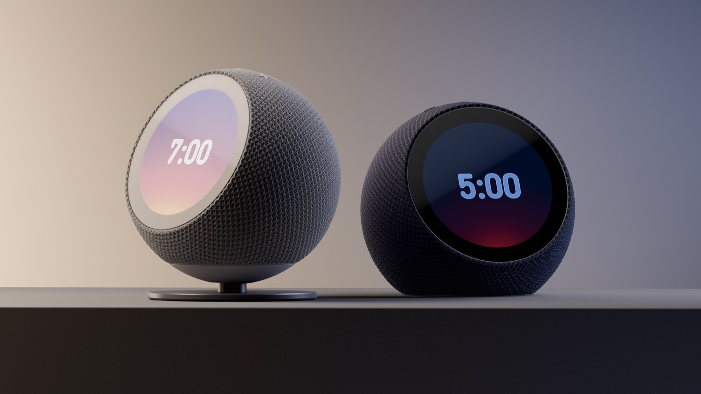

科技產品 T1
Anthropic官方主題插畫，非產品介面或績效數據。 Claude by Anthropic
Claude Enterprise 正式開放智慧報告、內建問卷及團隊共用預算
發佈時間
Anthropic／Claude Enterprise
企業可分析團隊如何使用Claude、蒐集使用者回饋，並把部分支出上限改以團隊共用方式管理。
- 智慧報告抽樣分析最長過去28天的對話，整理工作類型、成果、按牌價估算的成本及工具失敗等瓶頸。
- 官方說明每個組織每月可免費產生最多10份，功能預設關閉；CMEK、HIPAA或自有雲端混合推論配置不能使用智慧報告。
- 團隊共用預算與個人上限同時生效，任一耗盡即停止；內建問卷可客製問題與匯出，適用性須分功能確認。
完整報告收合報告
事件背景與影響
企業AI採用逐漸從「用了多少」走向「完成什麼與卡在哪裡」；但AI生成的分析仍需人工查核，不能代替員工績效評量。
事件與發佈依據
Anthropic官方產品文章10/28宣布三項功能一般可用；不是新模型或Duet研究預覽。
收錄紀錄
最近十四份日報無此管理功能事件，查無命中後核對39列同窗產品表，未見重複。
尚待確認
「一般可用」不代表所有配置都支援。報告使用抽樣及模型判讀，按牌價估算也不等於合約實付價格；公司明確說不應用來評估個人績效或作人事決定。
相關實體與概念
Anthropic、Claude Enterprise、smart reports、surveys、pooled group budgets、資料治理、AI成本
科技產品 T2

Echo Time日夜模式官方產品示意，非本站實測；左側另售底座不包含於基本價格。 About Amazon
Amazon 推出無相機 Echo Time 智慧鬧鐘，可選擇啟用非穿戴式睡眠感測
發佈時間
Amazon／Echo Time
Echo Time以3.2吋圓形觸控螢幕與Alexa+服務切入床邊情境，美國售價US$199.99起。
- 無相機，可更換數百款鐘面，螢幕依日夜調整亮度；提供Graphite、Glacier White與Coral Pink。
- 選用智慧鬧鐘以Omnisense感測、超音波與環境資訊判斷較淺睡眠時段，可在設定鬧鐘前10至60分鐘內喚醒。
- 睡眠感測需主動啟用，可在Alexa設定關閉或以靜音鍵停用麥克風；部分功能需Alexa+，美國Prime會員包含該服務。
完整報告收合報告
事件背景與影響
產品把鬧鐘、智慧家居與睡眠偵測結合，也把感測資料與麥克風控制帶進私人空間，功能便利性與隱私選擇同樣重要。
事件與發佈依據
官方article:published_time為2026-10-28T11:55:19.304Z；當日開賣，不是既有Echo Spot重新評測。
收錄紀錄
以Echo Time及上市動作查最近十四份日報，無命中後核對39列同窗表，未收錄；不同於Bee裝置或TorchNeuron。
尚待確認
睡眠改善與感測效果為廠商宣稱，不是醫療診斷或本站測試。美國價格與供應不等於台灣開賣；底座另售US$39.99，不能誤算為基本款內含。
相關實體與概念
Amazon、Echo Time、Alexa+、Omnisense、智慧鬧鐘、睡眠感測、隱私
全球焦點 1
續報｜烏克蘭 Dnipro 車站遭無人機攻擊，烏方通報至少十四死
發佈時間
烏克蘭官員稱俄軍無人機擊中擠滿乘客的車站月台，至少14人死亡；局部人道停火未阻止其他地區攻擊。
- 國營鐵路稱噴射動力無人機擊中一班通勤列車準備出發的月台。
- 早報13死，當日下午修正為至少14死，屬統計更新而非不同事故。
- 切爾尼戈夫、克列緬丘克等地另有傷亡，不與Dnipro車站人數混加成同一地點死亡數。
完整報告收合報告
事件背景與影響
民用鐵路不僅承擔通勤與撤離，也關係物資運輸；事件凸顯單一城市停火與全國安全之間仍有巨大差距。
事件與發佈依據
Reuters經AOL首次發布10/29 10:06:22 UTC；當日上午新攻擊及當日更新傷亡均在窗內。
收錄紀錄
10/26已收錄第聶伯地區較早攻擊，10/29收錄Oleshky局部停火；今日新增為Dnipro車站月台與列車遭襲，地點不在該局部停火範圍。
尚待確認
傷亡與歸責主要來自烏方；俄羅斯長期否認蓄意攻擊平民。救援統計仍可能變動，不因局部停火存在便宣稱這是停火範圍內違規。
相關實體與概念
烏克蘭、俄羅斯、Dnipro、Ukrzaliznytsia、民用鐵路、局部停火
全球焦點 2
歐洲央行宣布 Lagarde 將於明年二月七日離任
發佈時間
Christine Lagarde通知理事會及歐洲理事會主席，將於2027年2月7日辭去歐洲央行總裁職位。
- 官方已給出離任日期，尚非當日離職。
- 繼任者將依歐盟運作條約第283條程序，由歐洲理事會任命。
- 公告未指名繼任人，也未把離任與下一次升降息綁定。
完整報告收合報告
事件背景與影響
央行領導交接影響政策溝通與市場預期，但繼任程序及理事會集體決策不能化約為單一人的即時利率方向。
事件與發佈依據
ECB於10/29發布正式公告；不是傳聞或立即卸任。
收錄紀錄
最近十四份日報未見此人事公告，與前一日美國FOMC決議不同事件。
尚待確認
繼任人選與未來政策尚未確定，市場推測不能寫成任命結果；本報保留官方日期精度。
相關實體與概念
ECB、Christine Lagarde、António Costa、歐洲理事會、央行治理
全球焦點 3
續報｜北韓從元山發射約十枚短程彈道飛彈，南韓與日本加強監控
發佈時間
南韓軍方通報北韓向東部海域發射約十枚短程彈道飛彈，飛行約250公里，日本也偵測到疑似發射。
- 南韓聯參稱從元山地區偵測約十枚短程飛彈。
- 南韓表示與美國密切協調，維持監視與應對準備。
- 會談提議仍未獲北韓回應，不代表雙方已建立新的危機溝通機制。
完整報告收合報告
事件背景與影響
事件發生於邊界地雷、警告射擊及廣播爭議升高之際，增加軍事誤判與區域警戒壓力。
事件與發佈依據
AP經KSAT首次發布10/29 03:48:28 UTC；南韓稱發射約在當地12:30。
收錄紀錄
10/27收錄邊境裝甲車與火砲目擊、10/24收錄會談提議；今日新增是元山方向實際飛彈齊射，不是重述廣播威脅。
尚待確認
各媒體有「約十枚」「十多枚」或「飛彈及其他投射物」口徑，型號仍在分析；採軍方約數，不寫成精確十枚已全部辨識。
相關實體與概念
北韓、南韓、日本、元山、短程彈道飛彈、DMZ
全球焦點 4
美國第三季實質 GDP 初估年化成長百分之三點四
發佈時間
美國商務部初估第三季實質GDP按季折合年率成長3.4%，高於第二季2.2%。
- 投資、消費與政府支出增加，出口下降抵銷部分增幅。
- 進口增加；在GDP會計中，進口是扣除項，不等同進口本身造成經濟損失。
- 這是初估，後續資料更新仍可能修正。
完整報告收合報告
事件背景與影響
數據顯示整體產出維持擴張，但無法單憑總量判斷每個家庭、行業或就業市場都有相同改善。
事件與發佈依據
BEA第三季advance estimate於10/29美東08:30發布，即12:30 UTC。
收錄紀錄
最近十四份日報未收錄本次美國第三季初估；中國GDP及英國預算不是同一統計事件。
尚待確認
3.4%是季增年化而非年增或單季直接成長3.4%；不能將其與其他國家年增率直接並排比較或推定聯準會已決定下一步。
相關實體與概念
美國、BEA、實質GDP、年化季增率、投資、消費
全球焦點 5
續報｜西班牙政府確認列車事故增至七十四死，五十名傷者仍住院
發佈時間
西班牙內政部把Urda附近高速列車相撞死亡數上修至74人，辨識遺體及搜尋失聯者仍在進行。
- 內政部說夜間再確認六名罹難者，仍在辨識52具遺體。
- 區域政府稱原入院110人，60人出院，50人仍住院，其中15人危急。
- 調查焦點仍含安全系統故障後的行車指令；尚未完成最終責任認定。
完整報告收合報告
事件背景與影響
新數字改變災難規模評估，也凸顯家屬查詢、身分確認及醫療照護的後續需求。
事件與發佈依據
ABC News首次發布10/29 20:22:25 UTC；採週四內政部新增六名死者確認及區域政府新住院數字。
收錄紀錄
10/29日報收錄至少68死；本次新增為政府確認74死、仍住院50人及15人危急，並非另一家媒體重述原事故。
尚待確認
失聯通報不能直接加到死亡數；初步「人為指令」說法亦不能替代司法或獨立事故調查結論。
相關實體與概念
西班牙、Urda、Renfe、Iryo、內政部、事故調查
全球焦點 6
DoorDash 簽訂約一百七十億美元收購 Instacart 協議，交易仍待批准
發佈時間
DoorDash擬以每股65美元收購Instacart，股權交易總值約170億美元，至少75%對價為現金。
- Instacart董事會一致同意協議，仍需股東與監管機關批准。
- 公司預期2027年底或2028年上半年完成，存在變動及不成交風險。
- 交割前兩家公司仍獨立營運；合併會員等承諾屬交易後安排。
完整報告收合報告
事件背景與影響
交易若完成，將結合即時外送與雜貨履約平台，影響零售商、消費者及接單者的議價與服務選擇。
事件與發佈依據
兩家公司10/29公布已簽正式協議；TechCrunch於13:40:57 UTC已報導，不是僅有併購傳聞。
收錄紀錄
最近十四份日報無本次正式協議事件；不把併購當產品發布。
尚待確認
節省費用、更多接單及競爭效益是公司預期，不是已實現結果；不稱兩家公司已完成合併。
相關實體與概念
DoorDash、Instacart、Maplebear、反壟斷審查、外送、雜貨零售
全球焦點 7
Binance 因安全事件暫停多個網路提款，損失規模尚未核實
發佈時間
Binance確認調查安全事件，預防性暫停多個區塊鏈網路的提款；外界所傳巨額損失仍待確認。
- 公司發言人說多網路提款已暫停，安全團隊正緊急檢查。
- 使用者與研究人員指向熱錢包異常流出，但未有完整、可核對的損失結算。
- 趙長鵬稱預期資金會被覆蓋，並未提供可驗證的補償細節。
完整報告收合報告
事件背景與影響
提款停擺影響資產流動性，也容易讓假客服與釣魚連結趁機出現；平台聲明與鏈上估算需分開判讀。
事件與發佈依據
TechCrunch首次發布10/29 22:27:23 UTC，取得Binance發言人對暫停提款及調查的確認。
收錄紀錄
最近十四份日報未見此安全事件；與Polymarket或其他平台攻擊不合併為同案。
尚待確認
不能把「數十億美元」網路估算當已確認損失，也不能把前執行長預期當正式賠付保證；本站不提供非官方救援或登入連結。
相關實體與概念
Binance、幣安、熱錢包、交易所、提款、安全事件
全球焦點 8
GM 同意支付二億二千萬美元和解金，車輛資料蒐集須取得明確同意
發佈時間
GM同意就涉嫌出售駕駛行為與位置資料支付2.2億美元，並加強同意、資料保護及經銷商管理。
- 華盛頓與奧勒岡共同主導36名檢察長聯盟，華盛頓將分得1230萬美元。
- 蒐集或揭露駕駛及位置資料前，須取得消費者肯定且明確的同意。
- 和解包含內外部隱私計畫評估、經銷商監督與訓練要求。
完整報告收合報告
事件背景與影響
連網車輛資料可能影響保險費率；和解凸顯購車與車聯網服務註冊，不應被默認等同同意資料轉售。
事件與發佈依據
華盛頓州檢察長10/29公布36名檢察長聯合案件和解；Reuters當日16:28 UTC、TechCrunch21:01:04 UTC均已報導。
收錄紀錄
最近十四份日報無此次多州和解；與先前FTC措施有背景關聯，今日新增金額、聯合案件及外部評估要求。
尚待確認
GM稱Smart Driver已在2024年停止；和解不表示所有車輛資料用途全面禁止，也不等於個別消費者已取得特定補償。
相關實體與概念
General Motors、OnStar、Smart Driver、資料仲介、明確同意、車聯網
全球焦點 9
南非選定 Durban 為奧運申辦主城市，仍未獲主辦權
發佈時間
南非把Durban列為2036或2040奧運申辦主城市，預期採多城市分擔賽事的形式。
- 主場館構想以2010世界盃使用的Moses Mabhida Stadium為中心。
- 官員尚未提出完整舉辦成本估算。
- 接下來須向IOC簡報並參與候選篩選，並非國際奧會已選定Durban。
完整報告收合報告
事件背景與影響
若最終成功，可能成為非洲首次主辦夏季奧運；但現階段只是申辦程序，財政負擔與場館配置仍需檢視。
事件與發佈依據
AP經iNFOnews首次發布10/29 10:12:35 UTC；南非奧會代理主席當日正式宣布。
收錄紀錄
最近十四份日報未見此次國內選定主城市的決定，不是舊申辦構想重刊。
尚待確認
年份、成本與分城市方案均未定案；國內提名不保證進入最終名單或取得主辦權。
相關實體與概念
南非、Durban、SASCOC、IOC、奧運申辦、多城市方案
全球焦點 10
Amazon 第三季營收達二千零十九億美元，雲端成長與現金支出壓力並存
發佈時間
Amazon第三季淨銷售2019億美元、年增12%，AWS年增39.3%；大規模AI投資使過去十二個月自由現金流轉負。
- 營業利益281億美元，營業利益率13.9%。
- AWS淨銷售年增39.3%，公司稱其年化收入運行率1840億美元；不是已實現全年收入。
- 過去十二個月自由現金流為流出424億美元，全年現金資本支出預估約2200億美元。
完整報告收合報告
事件背景與影響
雲端需求成長與投入基礎設施的現金成本同時出現，營收增長不代表自由現金流也同步改善。
事件與發佈依據
Amazon當日美股收盤後發布季度財報，TechCrunch21:20:47 UTC已刊報導；官方僅日期，不補午夜。
收錄紀錄
最近十四份日報未見本季正式業績；與Echo產品發布及昨日Microsoft財報分開計算。
尚待確認
Prime Day移到第二季使年比可比性改變；固定匯率及排除活動時點的增幅不是報表直接增幅。資本支出為全年預期，不是本季已花完。
相關實體與概念
Amazon、AWS、Andy Jassy、營業利益、自由現金流、AI資本支出
研究備註
時間、來源與後續追蹤
研究截點 2026-10-30 07:57:40（Asia/Taipei）
研究時間與範圍
研究截點：2026-10-30 07:57:40（Asia/Taipei）。全球新聞：2026-10-29 07:57:40 至 2026-10-30 07:57:40（Asia/Taipei）。科技產品：2026-10-16 07:57:40 至 2026-10-30 07:57:40（Asia/Taipei）。